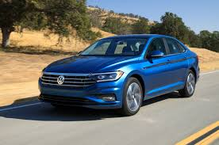

CARACTERISTICAS
* Faros de niebla.
Estás preparado para continuar tu camino en cualquier circunstancia gracias a los faros antiniebla con función de luz de curva estática, HL que te ofrecen una iluminación óptima para toda clase de condiciones climáticas, a cualquier hora.
* Las calaveras en diseño 3D están diseñadas con una esencia moderna. Su estilo contemporáneo está acompañado de luces apropiadas para asegurar que otros autos puedan verte con mayor facilidad.
* Vento tiene un alma urbana que lo hace único. Compruébalo con su radio con pantalla touchscreen de 6.5'' a color con sistema Volkswagen App-Connect, HL con el cual disfrutas de la música que te define, además de que puedes acceder a aplicaciones de tu Smartphone, como consultar mapas en tiempo real, revisar tus mensajes o llamar al contacto que quieras de tu agenda.
